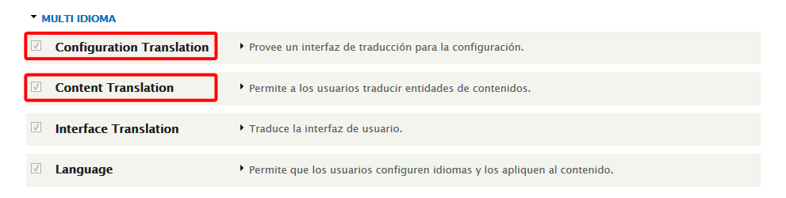
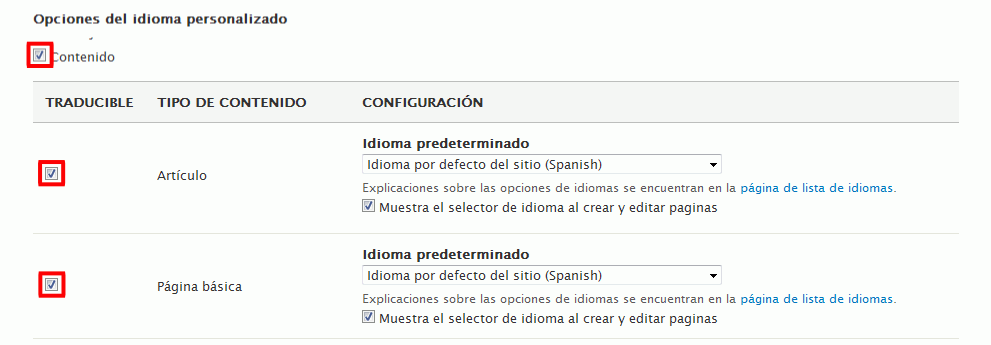
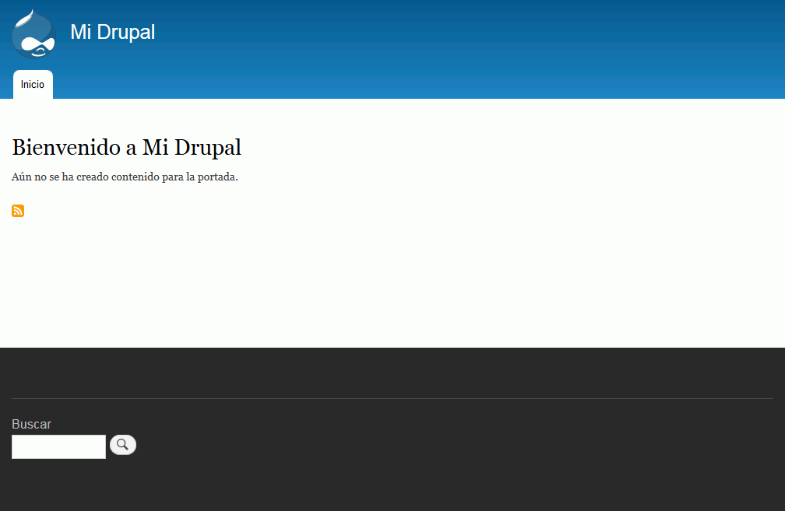

Esta lección está pendiente de actualizar para Drupal 8.
En esta lección se proponen ejercicios para conocer y utilizar Drupal. Se pueden consultar las soluciones de estos ejercicios de Drupal, aunque se recomienda intentar realizarlos primero sin recurrir a estas soluciones.
Drupal (4) 1 - Internacionalización
Traduzca el sitio web creado en la página 3 de ejercicios de manera que esté disponible en dos idiomas (español e inglés, por ejemplo).
Por completar
Traducción del sitio
Agregue el idioma inglés
Active los módulos de idioma Configuration Translation y Content Translation.

Active la traducción del contenido (artículos y páginas básicas).

Traduzca el contenido de su sitio web.
Detección del idioma por idioma seleccionado
Compruebe que en la dirección /drupal/en se ve el sitio en inglés y en /drupal se ve en español
Detección del idioma basado en el idioma del navegador
Comprobar si funciona o no
Active la detección del idioma basado en el navegador.
Configure en el navegador el idioma inglés como primer idioma
Compruebe que en la dirección /drupal se ve el sitio en inglés
Drupal (4) 2 - Bloques
Modificar los bloques de contenido para obtener este aspecto:

Drupal (4) 3 - Temas
En este ejercicio se trata de descargar e instalar un tema de Drupal.
Drupal puede ampliar su funcionalidad mediante módulos. Actualmente (febrero de 2016) no hay muchos módulos disponibles para Drupal 8, ya que Drupal 8 es reciente (se publicó en noviembre de 2015).
Módulo Ban
Este módulo permite banear usuarios por su IP. Este módulo está incluido en Drupal 8, aunque no activado de forma predeterminada.
Active el módulo Ban y configúrelo para banear una dirección IP desde la que pueda visitar su sitio (un compañero de clase o una máquina virtual).
Compruebe que desde esa IP no se puede visitar el sitio.
Pendiente de comprobar qué modulos funcionan en Drupal 8